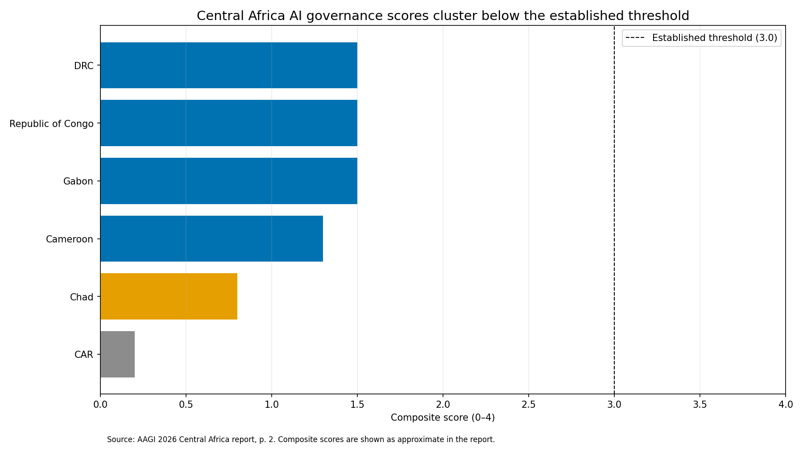
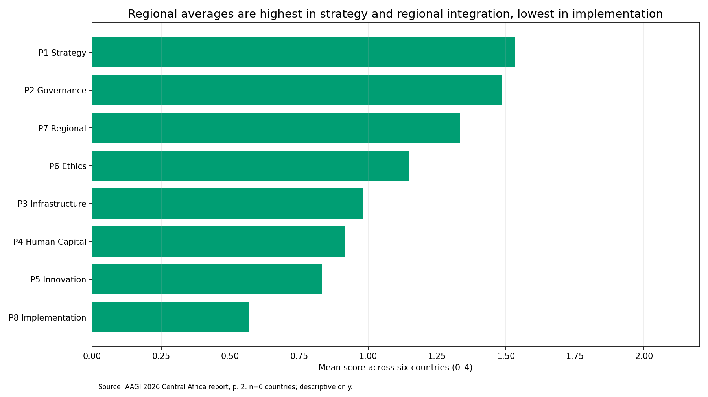
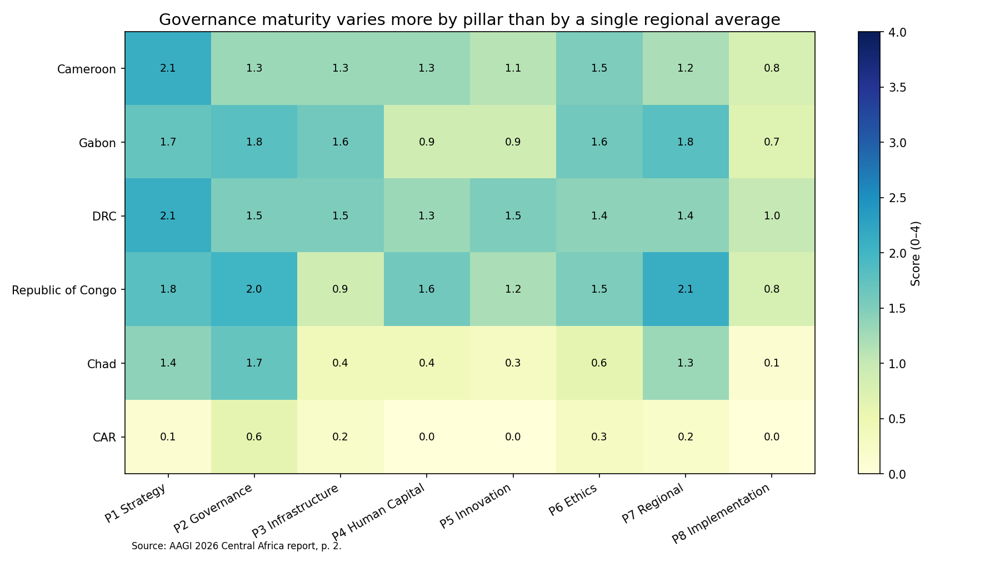
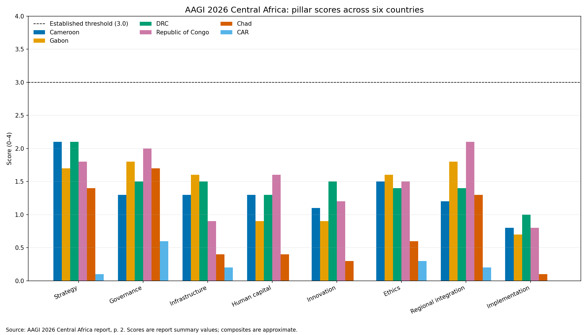
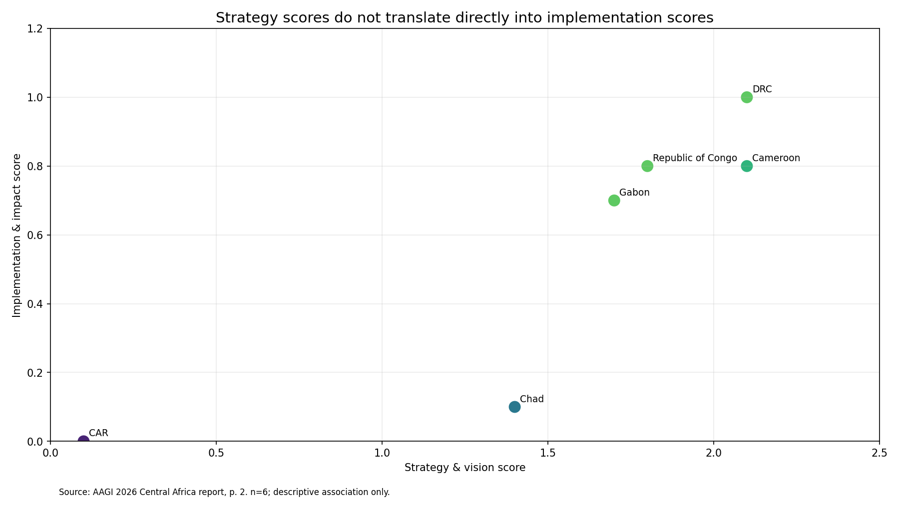
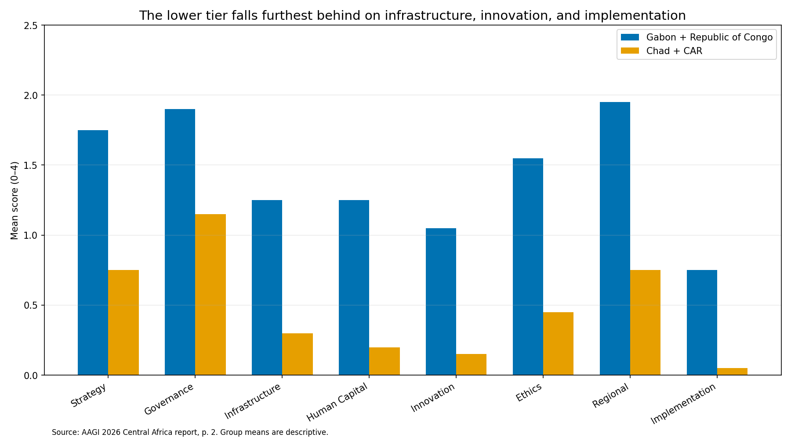
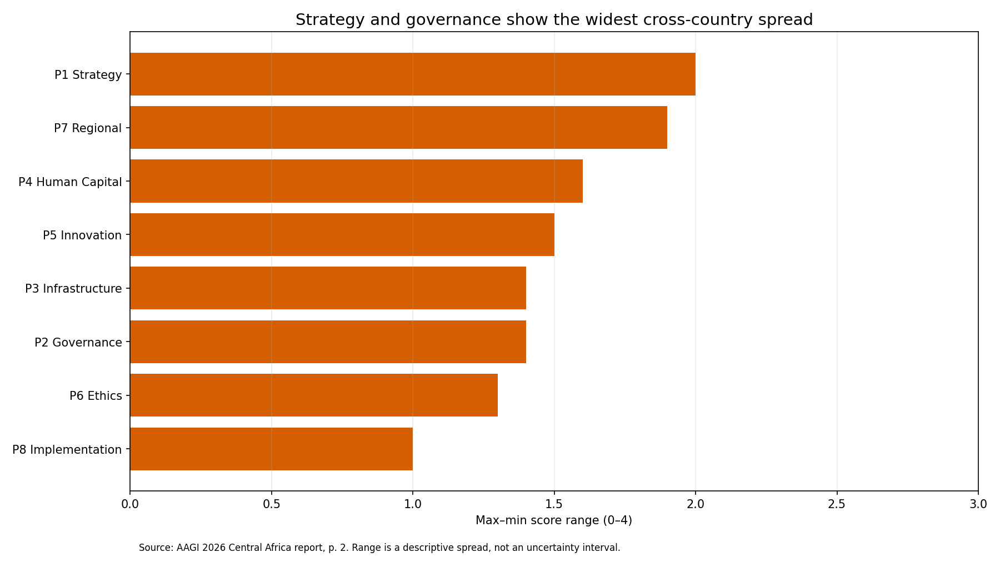
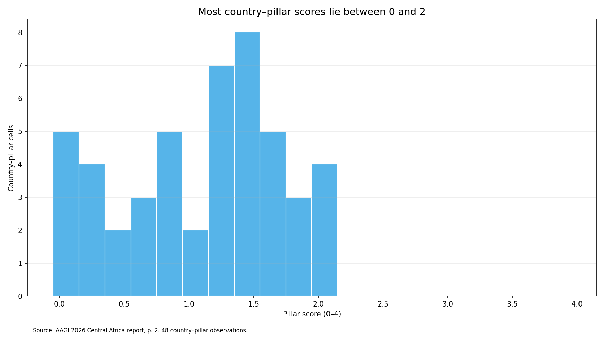
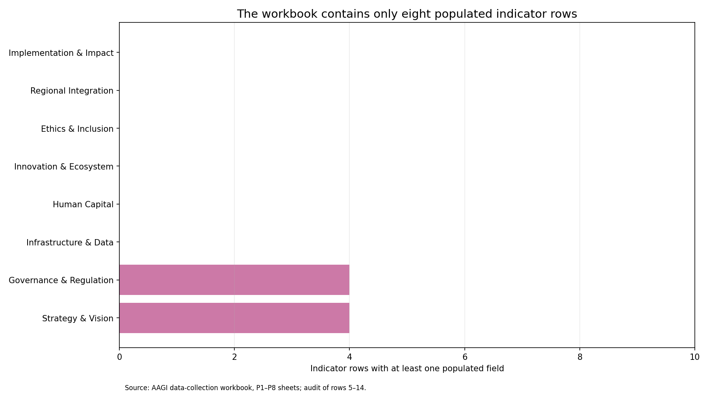

A reproducible reading of the 2026 Africa AI Governance Index across six Central African countries — where governance capacity concentrates, and where policy runs ahead of delivery.
The 2026 Africa AI Governance Index (AAGI) places all six Central African countries it covers — Cameroon, Gabon, the Democratic Republic of Congo, the Republic of Congo, Chad, and the Central African Republic — below its Established threshold of 3.0, with reported composites from roughly 1.5 down to 0.2 (Report p. 2). The decisive pattern is not an absence of policy but a gap between intent and delivery: Strategy and Vision is the strongest average pillar (~1.53/4) while Implementation and Impact is the weakest (~0.57/4). The six countries follow different pathways rather than one, so profiles — not a single ranking — should guide policy. A structural caveat frames the whole exercise: the supplied data-collection workbook holds only eight populated indicator rows out of eighty, and the index's own rule that a zero denotes no findable evidence rather than proven absence travels with every score.
All charts are generated by code/aagi_analysis.py from the report's
page-2 summary. Vector (SVG) versions are in figures/svg/.








